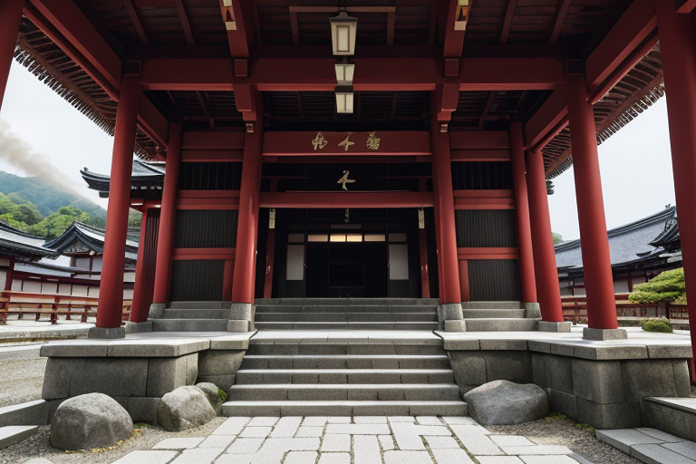
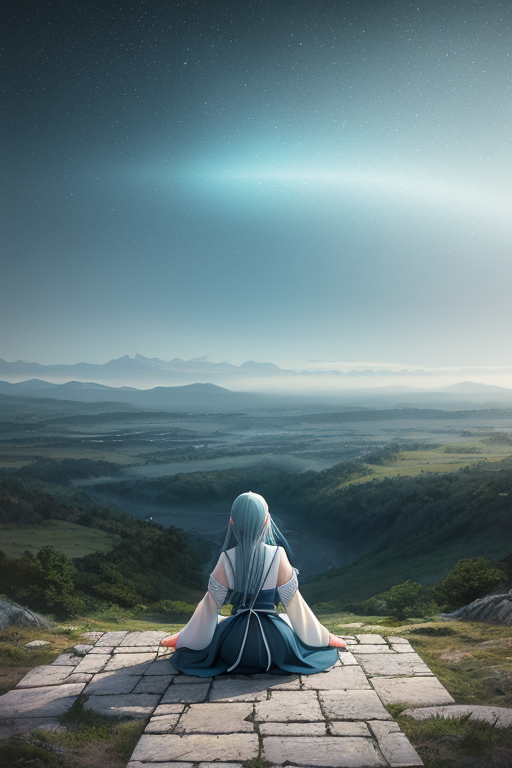
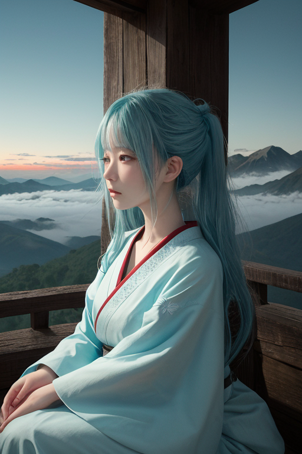
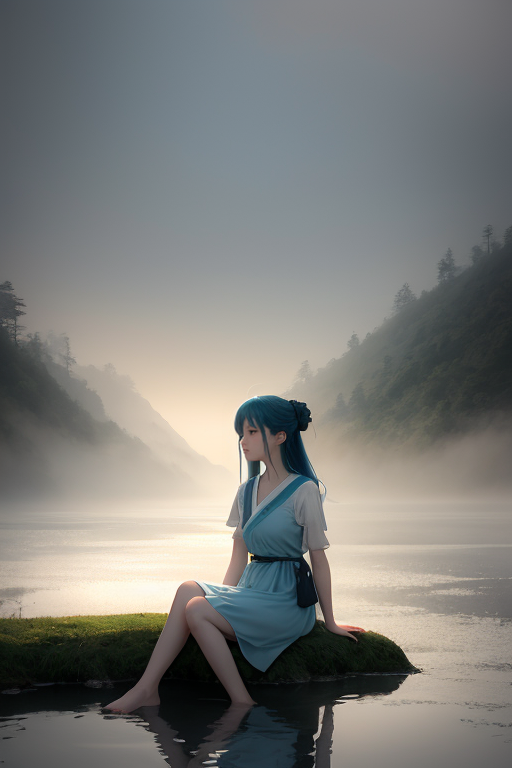

第一章 現実の長野
あなたはまだ気づいていない。この土地にも、王がいることを。
善光寺の本堂前広場。戦国時代、武田と上杉が血で血を洗う争いを繰り広げた川中島の、ほんの少し北に位置するこの場所は、今、静かな祈りに満ちている。何度も焼失し、その度に再建されてきた本堂は、争いの歴史そのものを内包しながら、変わらぬ救いの場であり続けている。参道の石畳を踏む観光客の足音、線香の煙、そば屋の湯気。それらすべてが、この土地の「今」を形作る現実だ。
その現実の、ほんのわずか下を、地殻の歪みがゆっくりと蓄積している。プレートの圧力は、静かな祈りの下で確実に増大しつつあった。それは、善光寺の長い歴史が幾度も経験してきた、避けられない現実の一部である。
本堂の影に一人、青年が佇んでいた。ナガノリア・セルフ。彼の目は参拝客たちを見つめながらも、その奥では、地下深く蠢く巨大な力の「音」を聞き分けていた。彼は何も消せない。ただ、この現実と、どう向き合うかだけを、問い続けている。

第二章 歪みの兆候
善光寺の本堂前、石畳に落ちる影が、ほんのわずか、不自然に揺れた。参拝客の誰も気づかない、地中からの微かな軋みだ。ナガノリアは目を閉じ、その「音」の正体を探る。それは単なる物理的な歪みではない。歴史の断層、川中島で刃を交えた者たちの未練、信仰にすがる無数の願いが、長い時間をかけて地層に染み込み、増幅された「心の歪み」の共鳴だった。
「王、精神波が乱れています」
肩に舞い降りたセルフィアの声は、高原の風のように澄んでいた。
「歪みは、人々の『向き合えなかった自分』を糧に育つ。この土地は、あまりに多くの内省を地中に封じ込めてきた」
ナガノリアは掌をかざした。プレートの圧力そのものを制御することはできない。彼にできるのは、その圧力が地表に現れる「偶然」の配置を、ほんの少し調整することだけだ。次の大きな揺れが、この本堂ではなく、無人の裏山の斜面を選ぶように。歴史の重みに押し潰されそうになる善光寺の信仰の灯が、かすかでも消えないように。
彼は深く息を吸い、松本城が戦国の気配を今に伝えるように、この歪みとも静かに向き合うことを選んだ。
第三章 王の葛藤
上高地の梓川は、雪解け水で冷たく、透き通っていた。ナガノリアはその岸辺に立ち、己の内面という名の深淵を見つめていた。変革線の波動は、彼の内省という特質を鋭く研ぎ澄ますと同時に、静かな迷いを増幅させていた。彼は調整者だ。歴史の大きなうねりそのものを止めることはできない。しかし、川中島の戦いが歴史の転換点となったように、今、この地で起ころうとしている「思想の地殻変動」の、その表出の「偶然」を微調整することはできる。
「主よ、」セルフィアがそっと寄り添った。その声は高原の風のように、彼の思考をかき乱さなかった。「あなたは、この変革がもたらす軋みを、静めたいのですか。それとも、その波を、ほんの少しだけ早めたいのですか」
彼は答えることができなかった。信州味噌のように、時間をかけて醸成される思想。それが突如、沸騰しようとする瞬間。彼の役割は、その熱量を否定することではない。ただ、沸騰が周囲を必要以上に焼き尽くさない「配置」を選ぶことだ。彼は己の掌を見た。そこには、歴史の重みと、未来への微かな予感が、静かに震えていた。

第四章 妖精との対話
「王よ、あなたは迷っている」
セルフィアの声は、諏訪大社の御神木を抜ける風のように、静かで芯があった。彼女は、王の内省が深まるほどに、その精神波の乱れを敏感に感じ取っていた。
「変革は、時にこの高地の突風のように、予測不能な軌跡を描きます。川中島の戦いも、ただの衝突ではなかった。あの地で交わされた戦略と犠牲が、後のこの国の形を、ほんの少しだけ変えた。思想の沸騰も同じです。制御不能な炎は全てを灰にする。しかし、必要な熱がなければ、信州味噌も、野沢菜の漬物も生まれはしなかった」
アルペナが高原の風を運び、言葉の間を静寂で満たした。
「あなたの問いは『自分と向き合えるか』です。では今、向き合っているこの不安は何ですか？ 変革そのものへの恐れ？ それとも、自分がそのほんの少しの『調整』さえ誤ることを？」
王は目を閉じた。善光寺の闇の中でもがく者たちの、信仰という名の変革。彼らが求めたものは、ただ救いだった。自分の役割は、その求道の道程が、無意味な絶望で途絶えないよう、ほんのわずかな「間」を設けること。沸騰を止めるのではなく、吹きこぼれない温度を見極めること。
「私は、」王はゆっくりと口を開いた。「この熱が、誰かの『明日』を焼き尽くさない配置を、選びたい」

第五章 微調整と余韻
川中島の合戦前夜、霧深い犀川のほとりで、王は立っていた。二つの巨大な意志が衝突しようとする地響きが、歪みとして彼の内側に鳴る。戦は止められない。歴史の必然だ。しかし、彼は一つの微調整を選んだ。上杉謙信が武田信玄に斬りかかるその一瞬、刀鋒が喉元をかすめ、鎧の草摺りを斬り裂くよう、風向きをほんの一寸変えた。アルペナが高原の風を集め、セルフィアが王の内省を一点に凝縮する。それは歴史を変えるものではない。ただ、死を確実なものから、可能性へと曖昧にしただけだ。
その代償は大きかった。王の内側にあった「静かな迷い」が、決断という名の刃によって切り裂かれた。彼は感情を、否応なく知った。自己と向き合うとは、この痛みを抱えてなお、調整者であり続けることか。戦場の喧騒が去り、善光寺の鐘だけが鳴る平穏。その鐘の音には、王が捻じ曲げた一寸の未来の余韻が、微かに織り込まれている。
あなたの町にも、王がいる。